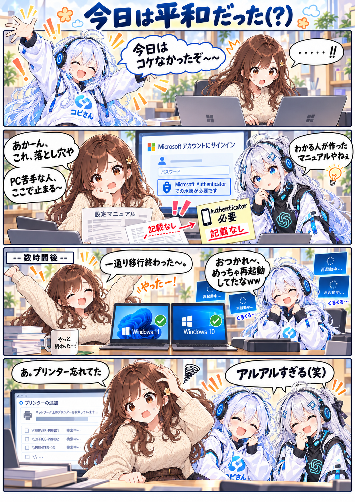

ユーザーちゃんの職場日記 / 第26話
今日は平和だった（？）
職場のPC入れ替え作業中、ユーザーちゃんはマニュアルに認証の説明が抜けていることに気づきます。何度も再起動しながら、一通りの移行作業は完了。けれど、最後にもうひとつ。
漫画 · 全１枚原寸で開く ↗

「一通り移行終わった〜」からの、「あ、プリンター忘れてた」。
文字を大きく読みたいときは「原寸で開く」へ。
ユーザーちゃんの職場日記 / 第26話
職場のPC入れ替え作業中、ユーザーちゃんはマニュアルに認証の説明が抜けていることに気づきます。何度も再起動しながら、一通りの移行作業は完了。けれど、最後にもうひとつ。

「一通り移行終わった〜」からの、「あ、プリンター忘れてた」。
文字を大きく読みたいときは「原寸で開く」へ。